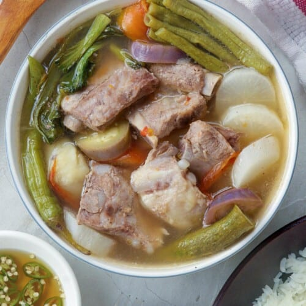

Mission
To introduce people around the world to the rich flavors and traditions of Filipino cuisine.
Experience the rich and diverse cuisine of the Philippines! Filipino food is a unique blend of indigenous traditions and influences from Spain, China, Malaysia, and the United States. Whether you're craving savory dishes, sweet desserts, or refreshing drinks, Filipino cuisine has something for everyone.
To introduce people around the world to the rich flavors and traditions of Filipino cuisine.
To become a trusted source of information and recipes for authentic Filipino food.
Filipino cuisine reflects the country's rich history, culture, and traditions. Every region has its own specialties, using locally available ingredients and cooking techniques passed down through generations. Meals are often enjoyed with family and friends, making food an important part of Filipino hospitality.

The Philippines' most famous dish, made by marinating chicken or pork in soy sauce, vinegar, garlic, bay leaves, and peppercorns before simmering until tender.
View Recipe and Ingredients
A comforting sour soup made with tamarind, vegetables, and pork, beef, shrimp, or fish.
View Recipe and Ingredients
A whole roasted pig with crispy skin and juicy meat, often served during celebrations and festivals.
View Recipe and Ingredients